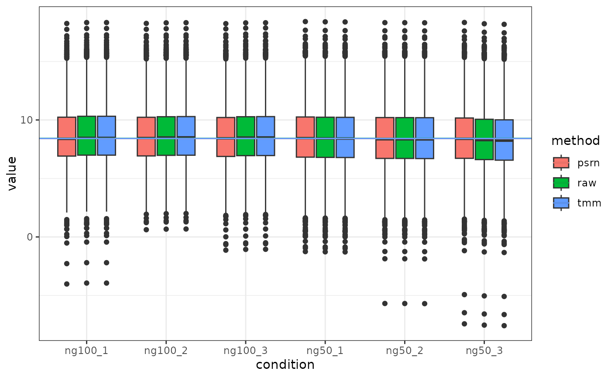
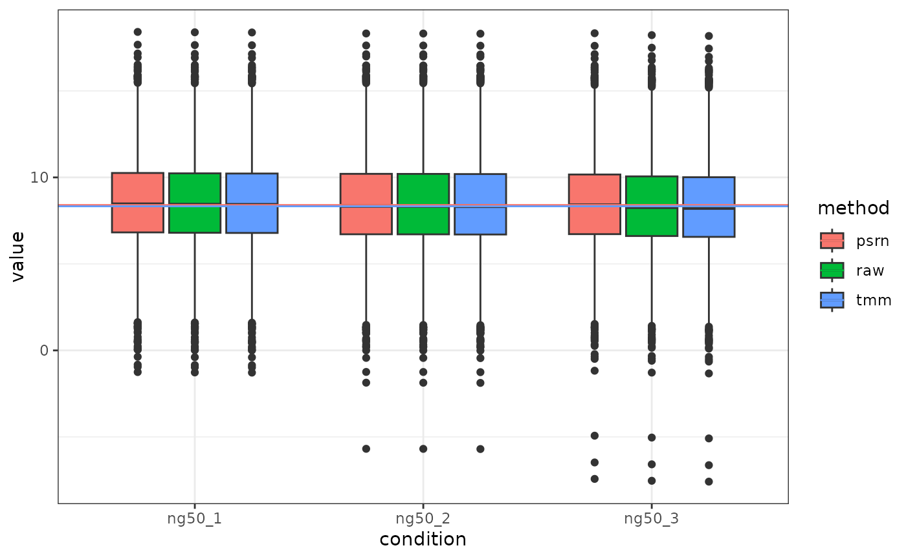

log2 transformed raw, tmm-, and psn- normalized values.plot_norm_box.RdThis function can be used to produce a visual aid to for selection
normalization method. Currently tmm and psrn
are used. Ideally, after the data is normalized all the boxplots should have
their median aligned close to the global trend line.
plot_norm_box(
data,
id_col = "id",
trim_M = 0.3,
trim_A = 0.05,
norm_target = NULL,
plot_target = NULL,
reference_sample = NULL
)data.frame containing the data to normalize
a character for the name of the column containing the name of the features in data (e.g., peptides, proteins, etc.)
percent of fold-change values to trim
percent of means to trim
target columns to normalize, supports
tidyselect-package syntax. By default, all numerical
columns will be used in the normalization if not specified.
target columns to plot, supports
tidyselect-package syntax. By default, all numerical
columns are plotted.
Specify a reference sample to normalize to in the
tmm method
ggplot with samples on the x-axis and observed values on the y-axis, different colors correspond to the raw or normalized data. Lines corresponds to the global median across all samples.
plot_norm_box(yeast, "identifier")

# Plot only ng50 samples
plot_norm_box(yeast, "identifier", plot_target = contains("ng50"))
